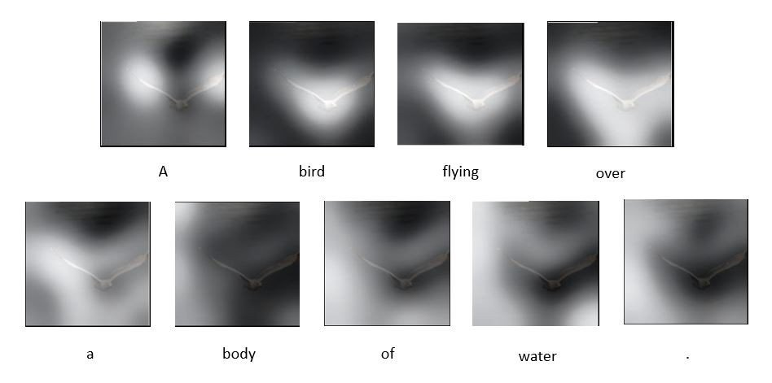

![]()
Ayer fue #CienciaPasión2020. Como #CienciaVisión, un escaparate del humor, la música y el amor por la ciencia a todos los niveles, a los que @InmaPToro y un servidor tuvieron a bien invitarnos. El objetivo: cantar una noticia del año. La nuestra: GPT-3
Pero antes, queremos agradecer de CORAZÓN a la peñita maravillosa que organizan todas estas MARAVILLAS de iniciativas y que nos llaman pa mamarrachear al compás: @bynzelman@maitecicleta@hayquehacerla@PutoMikel@Nebesu_@ConchiLillo@manolux4444@sassyscience_@garirius@Victagua (fijo que me dejo alguien)
Y ahora paso a comentar algo que me han preguntado en varias ocasiones: ¿De qué co**es va la letra de la canción? Este «modelito» sabanero no es otro que GPT-3, un modelo de deep learning para el lenguaje natural que desde su publicación ha revolucionado el campo. ¡Vamos por frases!
«Con mi burrito sabanero voy entrenando mi modelo,
red neuronal del lenguaje natural».
Son redes neuronales (una de las bases de la inteligencia artificial) especializadas en comprender y entender el lenguaje de los seres humanos -> el «lenguaje natural».
«Con tensorflow voy programando, el modelo voy compilando,
capa tras capa vi’apilando, el modelo voy compilando
GPT, GPT, se llama GPT-3″
Tensorflow es la librería más usada para programar redes neuronales. Aunque yo soy más de PyTorch. Pero a día de hoy es el estándar de programación y en producción. Casi todos los grandes avances se pueden encontrar preparados para Tensorflow.
En estos modelos de deep learning, las neuronas se estructuran por «capas», grupos de neuronas que se conectan con otras capas. En nuestro caso, palabras. Si las neuronas fueran alumnos que aprenden, las capas serían filas, como comentaba en Famelab.
Y GPT-3 es el sucesor de GPT-2 y 1, modelos de redes neuronales creados para modelar el lenguaje natural, basados en una arquitectura llamada «transformer». Y que fueron un bombazo por artículos como este, completamente escritos por una Int. Artificial.
«Libro tras libro descargando, la wikipedia escrapeando, todas las palabras en vectores a la entrada y a la salida»
GPT-3 se entrenó utilizando millones de libros de dominio público, artículos científicos y la wikipedia al completo. Referencias: https://arxiv.org/abs/2005.14165
«Atención, atención, mecanismo de atención»

La gran innovación de los transformers es el «mecanismo de atención», una herramienta que se construye en las redes neuronales, que permite a la red centrarse en unas entradas más que en otras, les presta más «atención».
El mecanismo de auto-atención (self-attention) se presentó en el paper «Attention is all you need», en el NeurIPS 2017, paper que, por cierto, también aparece en el vídeo: https://proceedings.neurips.cc/paper/2017/hash/3f5ee243547dee91fbd053c1c4a845aa-Abstract.html
«Tuki tuki tuki tuki,_
tuki tuki tuki ta
ajusta bien el modelo que lo vamos a entrenar»
Tremendo cumbión. Pues eso, a preparar un modelo de red «tó polluo», que si no, no funciona.
«Tuki tuki tuki tuki,
tuki tuki tuki ta,
a ver si pasa el test de Turing, que lo vamos a petar»
El test de Turing es un test diseñado por Alan Turing, que permitiría decir cuando una máquina es inteligente. Esto sucedía en un entorno experimental en el que humanos interactuaban vía texto en conversación con otros humanos, o podría ser con máquinas. Si un ser humano era incapaz de discernir si estaba hablando con una máquina o con otro ser humano, se dice que ese algoritmo ha pasado el Test de Turing.
«Con mi burrito sabanero vi’entrenando mi transformer
En arXiv, en arXiv, puedes encontrarme allí
en github, en github puedes encontrarme allá»
http://arXiv.org es una web donde muchos científicos publican sus avances antes de enviarlos a revistas. Son conocidos como pre-prints, y aunque todavía no han pasado el proceso de revisión, es una forma muy rápida (y gratuita) de acceder al conocimiento que se está produciendo.
Y Github, pues eso.. @github Un servidor de Git, un sistema de control de versiones donde los desarrolladores de software centralizar el control de los cambios que hacen a su código. Allí están centralizados en «repositorios», lugares desde donde después se puede distribuir el código y contribuir a una ciencia más abierta.
«Muy pronto los veremos integraos en una aplicación
dentro del Office generando textos con gran precisión
y en robots, en robots, robots de conversación»
La aplicación directa: integrar los modelos para generar, aumentar productividad e interactúar con humanos. Ya hay modelos similares que se están implementando en aplicaciones como Photoshop para ayudar en la productividad de imagen. Y para el lenguaje natural, herramientas como DeepL translate ya tienen una gran difusión para traducir textos. Es sólo cuestión de tiempo que se integren en los paquetes de software más usados.
«Y con lo caro que se ha puesto el precio del kilovatio
y lo que gasta en entrenarlo, Endesa se está forrando.
GPU, GPU, la factura de la luz»
El consumo energético: ésta es la cara B de todo el boom del Deep Learning. El consumo de las GPU, o las unidades de procesamiento gráfico que se utilizan en redes neuronales es mucho más elevado que el de los procesadores normales. Se dice que entrenar GPT-3 consumió tanto como conducir un coche de la tierra a la luna, y volver.
«Perrea con Ada Lovelace, lo baila Alan Turing,
lo está bailando Hinton perreando a LeCun.
Perreamos tan a ritmo nos cargamos la ley de Moore»
Ada Lovelace (1815-1852) se considera la primera programadora de la historia. Fue hija del poeta inglés Lord Byron, y de la también matemática y activista social Anna Isabella Byron. Fue educada, entre otras, por la matemática Mary Somerville. Tuvo una buena relación con Charles Babbage, a quien ayudó a diseñar el funcionamiento teórico de la «máquina diferencial», describiendo en sus «Notas» con un lenguaje muy técnico cómo funcionaría esta máquina, distinguiendo con claridad los conceptos de datos y procesamiento. Pero para más datos, este hilo es genial:
De Alan Turing, poco se puede decir que no se haya dicho ya. Padre de la Inteligencia Artificial, descifró Enigma (la máquina de los Nazis) y fue condenado al ostracismo por su propio gobierno al descubrir su homosexualidad. Acabó suicidándose.
Por último, Hinton y LeCun son considerados «padres» de la explosión del deep learning.
Con esto, y un bizcocho… ¡A PERREAR, PERREAR LA INTELIGENCIA ARTIFICIAL!
Gracias a los que habéis llegado hasta aquí, y a los que habéis hecho posible esta canción, este hilo y esta alegría que llevo dentro desde #cienciapasion2020 !!!
Citation
@online{martinez-murcia2020,
author = {Martinez-Murcia, F.J.},
title = {Mi {Modelito} {Sabanero}},
date = {2020-12-20},
url = {https://pakitochus.github.io/fjmartinezmurcia.es/COMMUNICATION/2020-12-22-modelito-sabanero/},
langid = {en}
}